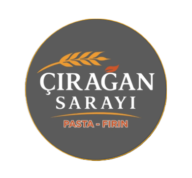

ÇIRAĞAN SARAYI
taze · günlük · el yapımı · adana
📲
Uygulamayı Yükle
ana ekrana ekle, app gibi açılır
🥐
Vitrini Aç & Sipariş Ver
menü, sepet, WhatsApp sipariş
💬
WhatsApp Sipariş
direkt yaz, hemen dönelim
📸
Instagram
@akkapi.ciragansarayi
☎
Ara
0322 428 21 01
📍
Konum & Yol Tarifi
Akkapı · Seyhan · Adana
Akkapı Mah. Şıh Cemil Cad. No:124/A · Seyhan/Adana
Her gün 08:45 – 24:00 · Çırağan Sarayı Pasta & Fırın